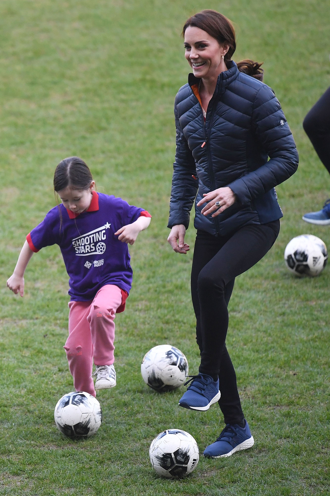
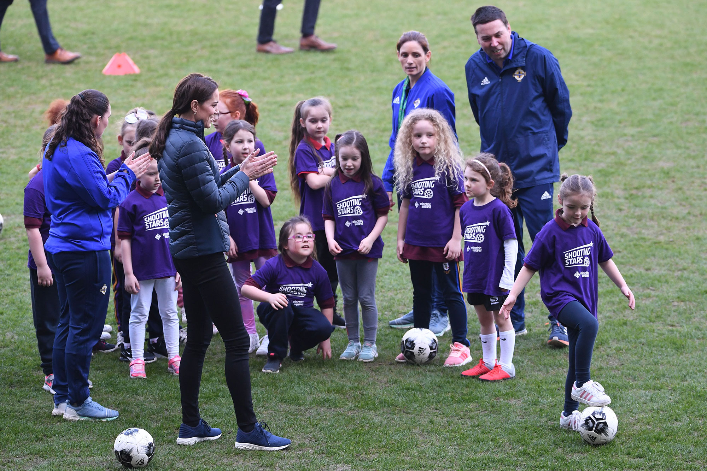

Kate Middleton and Prince William made a surprise two-day royal visit to Northern Ireland to celebrate the country's young people.
The first day of the visit involved plenty of outdoor acitivities. Duchess Kate played soccer with young girls and eventually her husband at Windsor Park Stadium in Belfast.
Prince William teased her soccer skills and Kate reveals that Prince George thinks her soccer skills are "rubbish."
During Prince William and Kate Middleton's surprise two-day trip to Northern Ireland, the royal couple played soccer at National Football Stadium at Windsor Park and exchanged adorable PDA moments throughout the game. Despite getting competitive during the match, Kate was seen putting her hand on William's back at one point, and he put his hand on her arm. The Duke and Duchess of Cambridge are less likely to show PDA during official engagements, but they do sneak in some sweet exchanges from time to time, like at Princess Eugenie's wedding last fall.
 The married couple seemed to be in high spirits as they laughed and played with young school children. According to The Telegraph, Will teased Kate about her soccer skills—or lack thereof. He jokingly told the kids, "Look out, she goes for the ankles," and shouted out, "Tackle her!"
The publication added that Kate told a group of young children that her five-year-old son Prince George is also learning how to play "the beautiful game." The duchess kept it real with the young children, telling them what her son really thinks about his mother's soccer skills. "Mummy, you’re so rubbish," Middleton quipped. "I should have picked up some tips from George," she added.